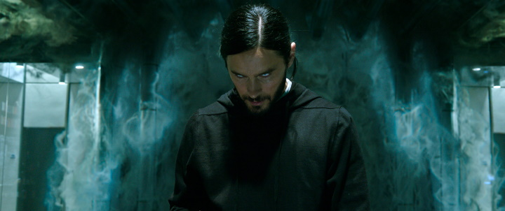
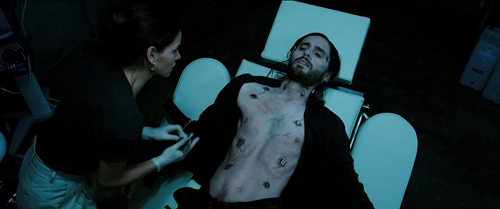
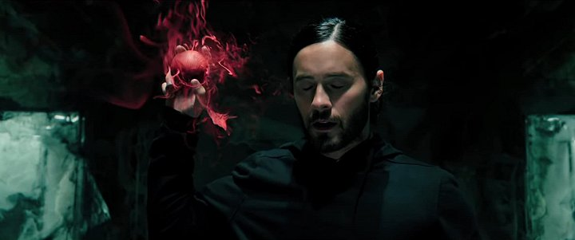
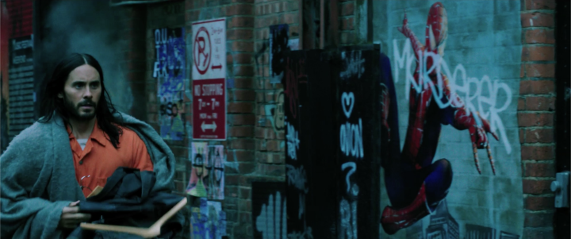

Detail filmu


| Rok vydání: | 2022 | |
|---|---|---|
| Žánr: | Akční / Horor / Sci-Fi / Thriller | |
| Premiéra: | 31.03.2022 | |
| Délka: | 108 min | |
| Přístupnost: | 12+ | |
| Režie | Daniel Espinosa | |
| Obsazení | Jared Leto, Adria Arjona, Matt Smith, Jared Harris, Al Madrigal, Tyrese Gibson, Michael Keaton ... |
Morbius
Na stříbrné plátno přichází jeden z nejpodmanivějších a nerozporuplnějších hrdinů filmového světa značky Marvel, jehož představitelem je Oscarem oceněný Jared Leto, který se ve snímku mění v charismatického antihrdinu Michaela Morbiuse. Doktor Morbius trpí vzácnou a smrtelnou krevní chorobou. S úmyslem zachránit druhé, kterým hrozí stejný osud, se Michael rozhodne k zoufale riskantnímu činu. Zdánlivý úspěch přinese lék, který je však dost možná nebezpečnější než sama smrtelná choroba, neboť promění léčitele v lovce.
Galerie



